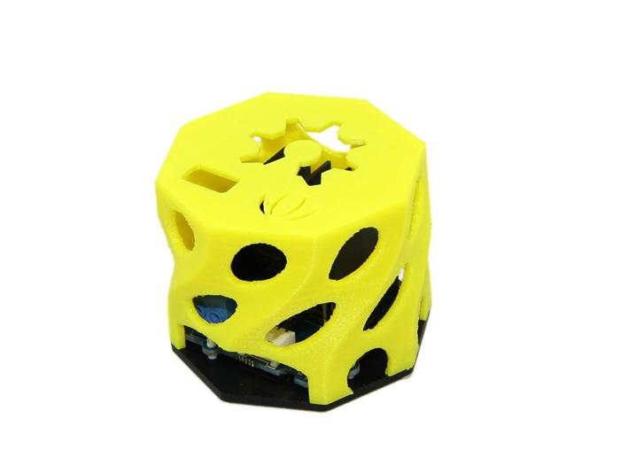
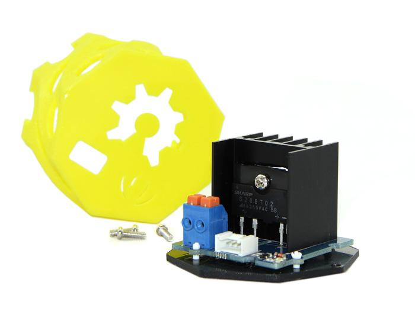
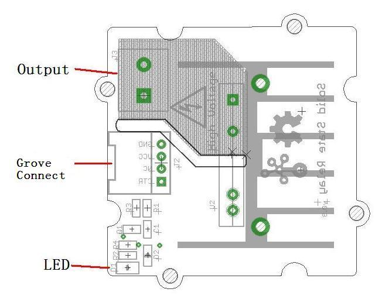
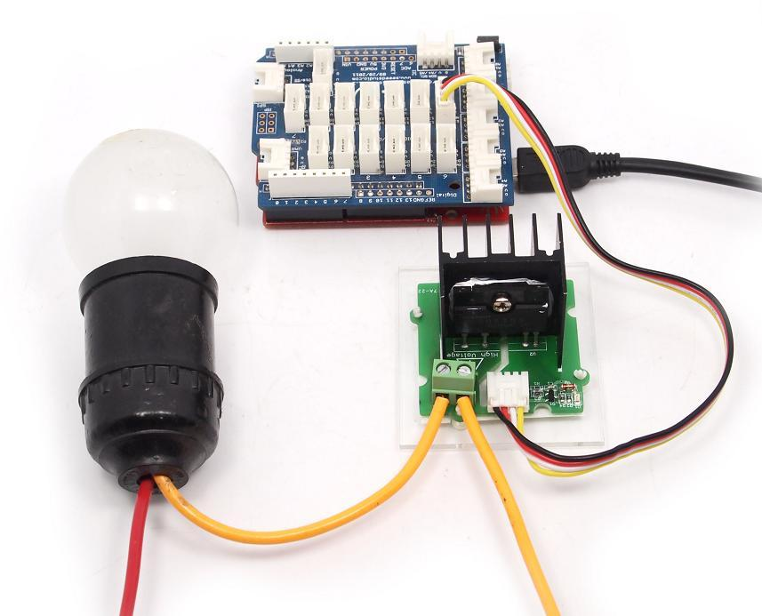

Grove – Solid State Relay is a non-contact electronic switch module that has relay features. Based on S208T02, it has a maximum output of 250VAC/4A, with a switching speed less than 10ms. This module is equipped with acrylic base and a 3D-printed protection insulation shield, for user’s safety. The featured LED indicates that the relay is on. It can be widely used in various areas such as computer peripheral interfaces, temperature/speed/light adjustment, servo control, petrochemical, medical instrumentations, financial devices, coal, meters, traffic signals, etc.

| Item | Min | Typical | Max | Uint |
|---|---|---|---|---|
| Input Voltage | 3.0
|
3.3
|
5.0
|
VDC
|
| Input Current | 16
|
20
|
50
|
mA
|
| Output Voltage | --
|
220
|
250
|
VAC
|
| Output Current | --
|
--
|
4.0
|
A
|
| Operating frequency | 45
|
50
|
65
|
Hz
|
| Operating temperature | -25
|
25
|
85
|
℃
|
| Turn-on time | --
|
10
|
--
|
ms
|
| Turn-off time | --
|
10
|
--
|
ms
|
| Dimension | 44x44x32
|
mm
| ||
| Net Weight | 25.5
|
g
| ||

The Grove - Solid State Relay has a variety of applications. Here we elaborate on how to use it to control a bulb.
First off, you'll need to connect it to the Arduino like so:

You need upload the below code. Please click here if you do not how to upload.
/*
Grove - Solid State Relay Demo Code
The ssr will turn on for 5s and then turn off for 5s, and so on.
http://www.seeedstudio.com
*/
int ssrControlPin = 13;
void setup() {
// initialize the digital pin as an output.
pinMode(ssrControlPin, OUTPUT);
}
void loop() {
digitalWrite(ssrControlPin, HIGH); // set the SSR on
delay(5000); // wait for 5 second
digitalWrite(ssrControlPin, LOW); // set the SSR off
delay(5000); // wait for 5 second
}
After upload the code, you can see the bulb will light 5s and then turn off for 5s, and so on.
1.You should have got a raspberry pi and a grovepi or grovepi+.
2.You should have completed configuring the development enviroment, otherwise follow here.
3.Connection
4.Navigate to the demos' directory:
cd yourpath/GrovePi/Software/Python/
nano grove_solid_state_relay.py # "Ctrl+x" to exit #
import time
import grovepi
# Connect the Grove Solid State Relay to digital port D4
# CTR,NC,VCC,GND
relay = 4
grovepi.pinMode(relay,"OUTPUT")
while True:
try:
# switch on for 5 seconds
grovepi.digitalWrite(relay,1)
print "on"
time.sleep(5)
# switch off for 5 seconds
grovepi.digitalWrite(relay,0)
print "off"
time.sleep(5)
except KeyboardInterrupt:
grovepi.digitalWrite(relay,0)
break
except IOError:
print "Error"
5.Run the demo.
sudo python grove_solid_state_relay.py
1) Thermal performance of Grove – Solid State Relay（S208T02）
2) Limit load current of Grove – SSR
3) Measures to improve the limit load current
By recording SSR chip temperature at different current and different time points, analysis the data and draw conclusions.
Figure 1 is screenshot from S208T02 datasheet, we can see that at different heat sink and different temperature, SSR’s current is different.
There needs a temperature sensor to get the temperature of the chip. I use DS18B20 whose detection range is -25-125℃ to meet the requirements.
Figure 2 shows the experimental equipment and installation plans, the temperature sensor is tied to the right side of the heat sink, to make the temperature that 18b20 detects as close as possible to the heat sink temperature, smear between the sensor and the heat sink thermal plastic. Between the heat sink and SSR coated thermal plastic. Therefore， the temperature of the 18b20 is equal to the temperature of SSR.
| 1min | 5min | 10min | 20min | stable time | |
|---|---|---|---|---|---|
| 0.5A | 31.40 | 33.75 | 34.75 | 35.00 | 15min |
| 1A | 31.8 | 36.75 | 39.6 | 40.56 | 18min |
| 2A | 34.5 | 46.6 | 48.88 | 51.13 | 20min |
| 3A | 35.56 | 52.81 | 58.88 | 60.06 | 17min |
| 4A | 38.00 | 57.88 | 63.88 | 67.00 | 19min |
| 5A | 44.00 | 66.00 | 73.12 | 75.37 | 19min |
Note 1: The unit of temperature in the table is ℃
Note 2: When tested room temperature is 28 ℃
In order to prove that improve the level of heat sink will improve the SSR limit operating current, I did an expansion experiment.
Cuz I hadn’t a larger heat sink on hand, so I installed a fan (which I take for my PC’s CPU) above the SSR. As shown in Figure 3.
I just test the stable time of different operating current, as shown in Table 2.
| 6.0A | 6.5A | 7.0A | 7.5A | |
|---|---|---|---|---|
| Stable time | 54.44℃ | 57.63℃ | 60.06℃ | 62.38℃ |
From the above experimental results, the following conclusions can be drawn:
Grove - Solid State Relay Eagle File
Grove - Solid State Relay Demo Code
Grove - Solid State Relay in PDF
Grove - Solid State Relay Test Report
Copyright (c) 2008-2016 Seeed Development Limited (www.seeedstudio.com / www.seeed.cc)